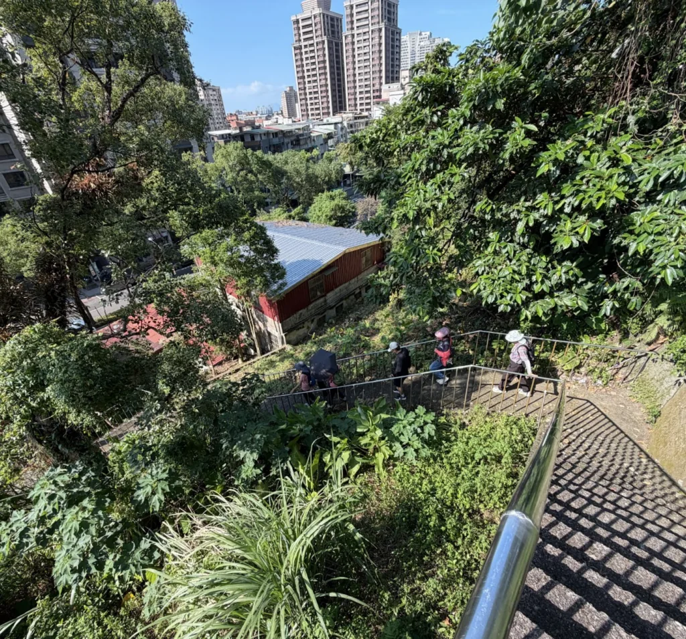
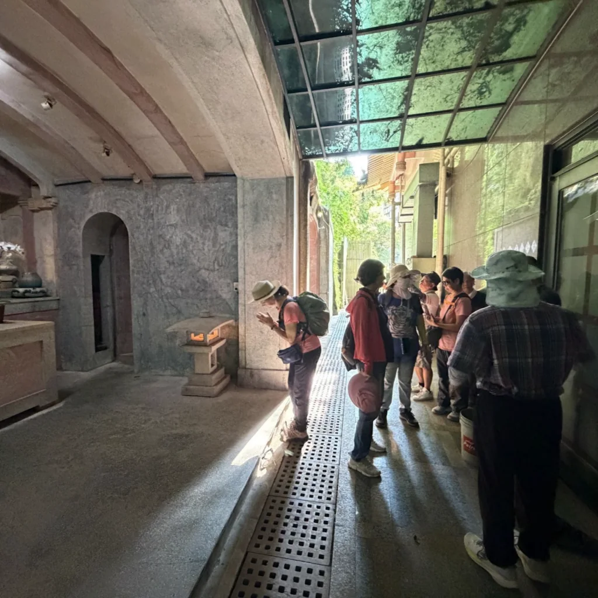
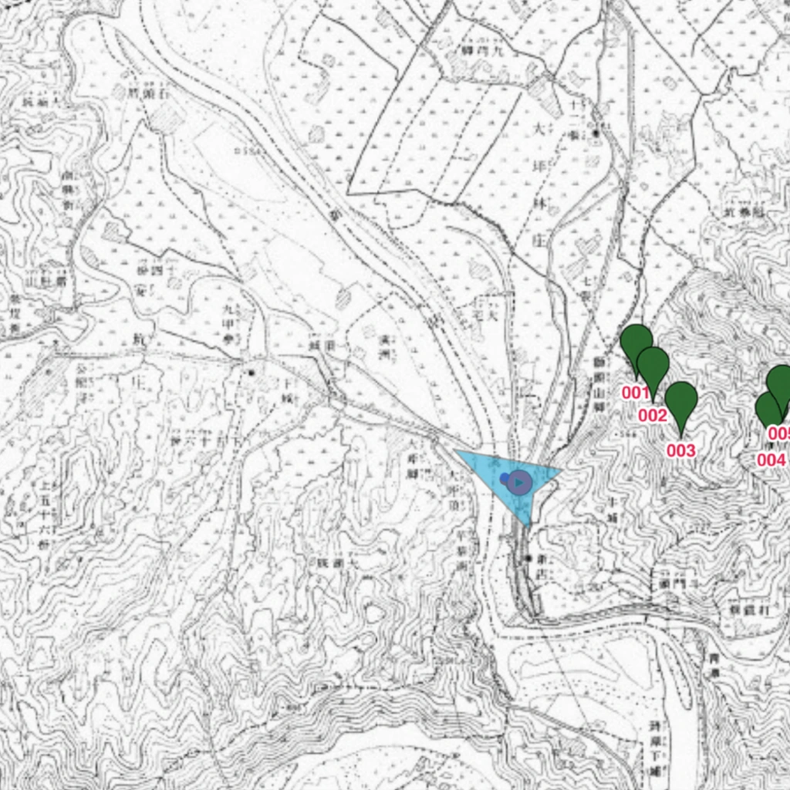

在地景之中，拾回消逝的地方記憶
地方的歷史，不只存在於文獻與地圖之中，更隱身於河流的轉折、田埂的紋理、街巷的尺度，以及居民日常生活的記憶裡。本計畫以田野調查為方法，循著新店溪流域與水圳脈絡，走入昔日聚落與生活場域，透過口述訪談、歷史地圖比對及實地踏查，探尋地景變遷背後的人群移動、產業發展與信仰脈絡。
那些散落在長者記憶中的片段，經由採集、整理與彼此對話，逐漸交織成地方的歷史圖像。田調不只是尋訪過去，更是重新閱讀土地、理解人與地方關係的過程。讓被遺忘的故事重新發聲，也讓地方記憶在世代之間持續傳承。
沿著水路走讀，把老居民口中的記憶，一段一段收進來。
這裡收錄新店崇光社區大學 115 秋季班河川閱讀課程的踏查與訪談成果。長輩、志工與居民，都可以在這裡瀏覽故事、翻看路線，也把家鄉的記憶分享給家人朋友。
水岸、聚落與人的故事


